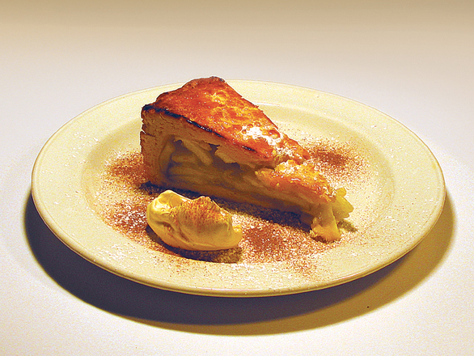

Äpplekaka
Äppelkaka är en vanlig efterrätt, en kaka, som innehålleräpplen som huvudingrediens. Vaniljsås serveras ofta till äppelkaka. Äppelkaka kan göras med smuldeg eller pajdeg.
I Finland bakade man på 1800-talet en knaprig äppelkaka med rågsmak av riven sötsur limpa och äppelmos.
Skånsk äppelkaka (eblakaga) är en efterrätt av skånskt ursprung. Serveras traditionellt bl.a. i samband med Mårtensgåsfirandet den 11 november.
Skånsk äppelkaka är en sorts smulpaj med varianter av äpplen samt äppelmos. Varianter med (endast) äppelmos är troligtvis inte traditionella, utan moderna (förenklade) recept. På äppellagret läggs ett lager smulat bröd och ovanpå detta smör och socker. Till äppelkakan serveras vaniljsås eller vispgrädde.
Traditionella Skånska äppelkakor bakas med smulat mörkt rågbröd till exempel kavring, men den vanliga moderna tappningen använder smulat ljust bröd el. ströbröd.Dansk äppelkaka (æblekage) är lik den skånska men bakas inte och serveras kall, toppad med vispad grädde ovanpå brödsmulorna.
Intressanta fakta!
- Huvudingrediensen i äppelkaka är äpplen
- Äppelkaka och äppelpaj är inte samma sak
Den ursprungliga texten är tillgänglig hämtad från
https://sv.wikipedia.org/wiki/äppelkaka